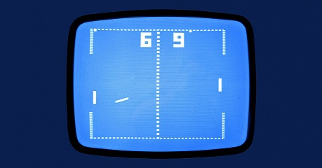

Title Heading
title description, Dec 8, 2020

Pong is a table tennis video game. Made by Atari and released in 1972. It was one of the earliest
arcade games and created by Allan Alcorn and Nolan Bushnell. Bushnell based the game on a electronic
ping-pong
game
which was included in the Magnavox Odyessey, was the first home video game console.
Title
<img src="img/blog1.jpg" alt="blog" />
<p>text. text. text.</p>
<p>Pong is a table tennis video game. Made by Atari and released in 1972. It was one of the earliest
arcade games and created by Allan Alcorn and Nolan Bushnell. Bushnell based the game on a electronic
ping-pong
game
which was included in the Magnavox Odyessey, was the first home video game console.</p>
</div>
</div>
<div class="card">
<h2>Title</h2>
<h5>
<title description, Sept 8, 2020/h5>
<img src="img/blog1.jpg" alt="blog" />
<p>text. text. text.</p>
<p>Pong is a table tennis video game. Made by Atari and released in 1972. It was one of the earliest
arcade games and created by Allan Alcorn and Nolan Bushnell. Bushnell based the game on a electronic
ping-pong
game
which was included in the Magnavox Odyessey, was the first home video game console.</p>
</div>
</div>
<div class="right-column">
<div class="card">
<h2>About Me</h2>
<Img src="img/about-me.jpg" alt="me" />
<p>Some text abobut me</p>
</div>
<div class="card">
<h3>Popular Post</h3>
<img src="img/popular-blog1.jpg" alt="popular" />
<img src="img/popular-blog1.jpg" alt="popular" />
<img src="img/popular-blog1.jpg" alt="popular" />
</div>
<div class="card">
<h3>follow me</h3>
<p> Some text</p>
</div>
</div>
</div>
<footer>
<h2>Footer</h2>
</footer>
</div>
</body>
</html>